Orchid
Orchid
Documentation| Date | Version | Changed by | Change Description |
|---|---|---|---|
| Mar 30, 2016 | 1.0 | wideorchid | Intial Release |
Extract the zipped package downloaded from ThemeForest to your desktop. In the extracted package you will find orchid_wp.zip which is the WordPress theme file.
You can install the theme one of two ways:
1.1 Via FTP: Extract the orchid_wp.zip file and upload the extracted folder to the /wp-content/themes/ folder on your server.
1.2 Via WordPress: Navigate to Appearance > Add New Themes > Upload page. Select the orchid_wp.zip file. Press the Install Now button to upload and install the theme.
2. After uploading the theme, you must activate it. Navigate to the Appearance > Themes page to activate the theme.
After activate theme.
1. Navigate to Appearance > Install Plugins.
2. Press the Install Now button to install the plugins.
3. After plugins installations click on the "Return to Required Plugins Installer"
4. Now you should activate the plugins
We need to complete 3 steps as below to finish demostration importing
Note: to avoid duplicated contents, please reset all old setting of Pages, Menus, Widgets
Please follow this section step by step.
1. Go to Dashboard > Tools > Import and Click on Wordpress and Install it.
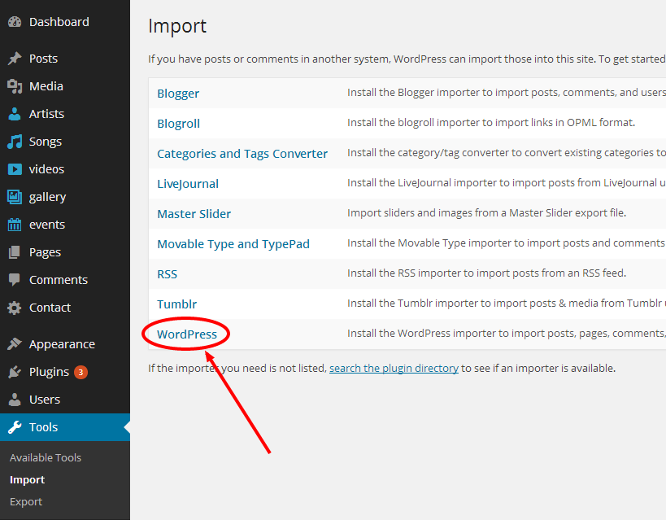
2. Choose a content_data.xml file from your download package and then click on Upload file and Import
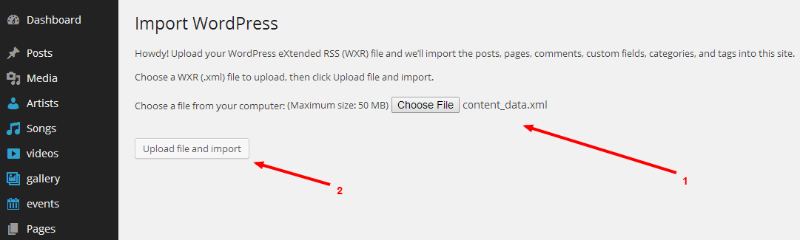
3. Assign Authors and start import, click on Submit
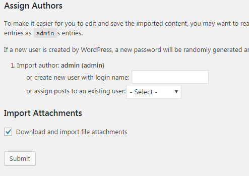
4. This process may take a while on some hosts, so please be patient. (some hosts between 5-6 minutes)
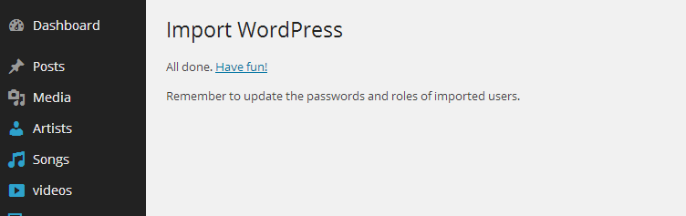
1. Go to Download package > folder demo content and open options_backup.txt select all > copy all codes.
2. Go to Dashboard > Theme Options > Import/ Export Backup, click on Import from file and paste code here:
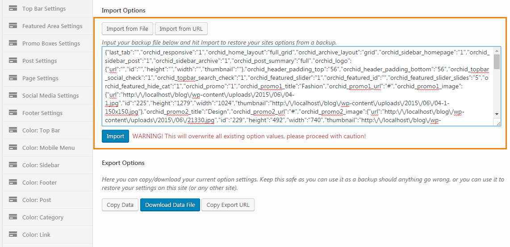
Note: This step will be done by Plugin Widget Importer & Exporter
If it isn't available on your Dashboard, please install it.
Go to Dashboard > Tools > Widget Importer & Exporter and Choose file widgets_data.wie from download package > folder Demo content
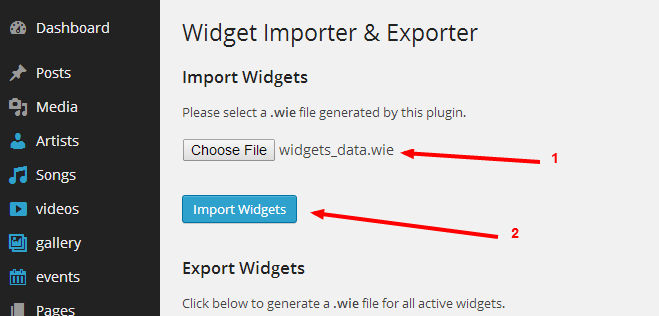
You can easy to build your Homepage layout by navigate to Appearance > Customize > Site Layout Or You also can do this via Theme Options panel -> Site Layout
If you would like to change the number of posts that should show per page, you can go to Settings > Reading > Blog pages show at most then change the number.
Navigate to Appearance > Customize > Site Layout Or Go to Dashboard > Theme Options > Site Layout
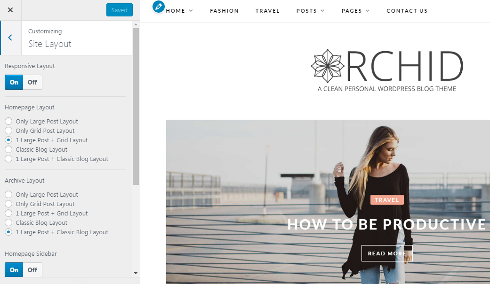
After setting up the main layout of Site. You should save the setting by click Save & Publish button
Navigate to Appearance > Customize > Header Settings Or Go to Dashboard > Theme Options > Header Settings
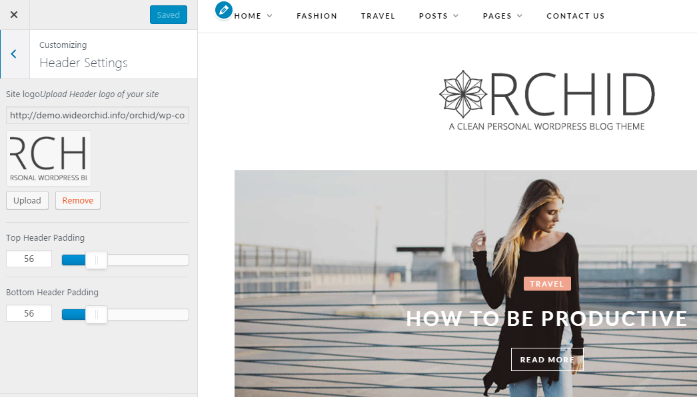
Setting Header of Site as below:
Navigate to Appearance > Customize > Top Bar Settings Or Go to Dashboard > Theme Options > Top Bar Settings
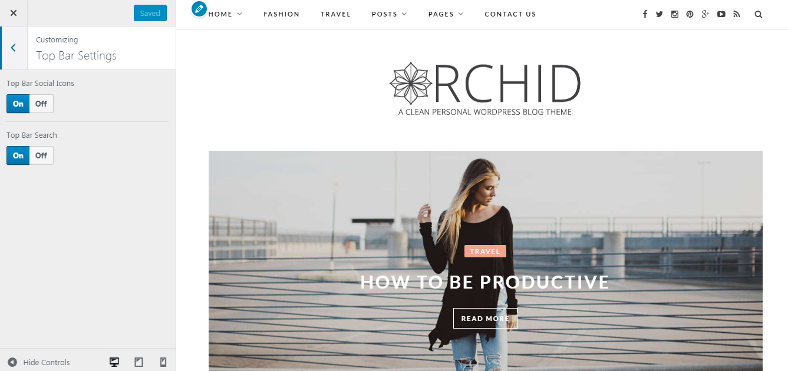
Setting Top Bar of Site as below:
Navigate to Appearance > Customize > Featured Slider Settings Or Go to Dashboard > Theme Options > Featured Slider Settings
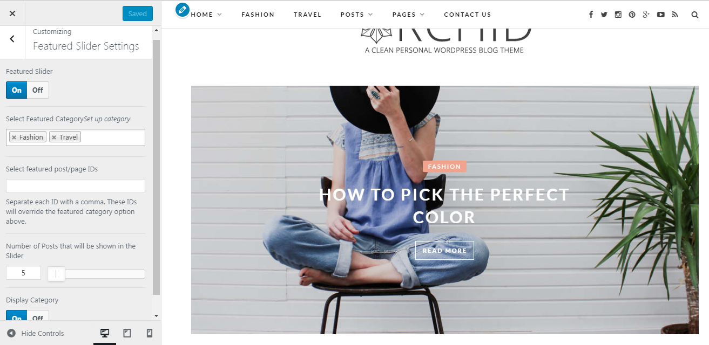
Setting Featured Slider of Site as below:
Navigate to Appearance > Customize > Promo Boxes Settings Or Go to Dashboard > Theme Options > Promo Boxes Settings
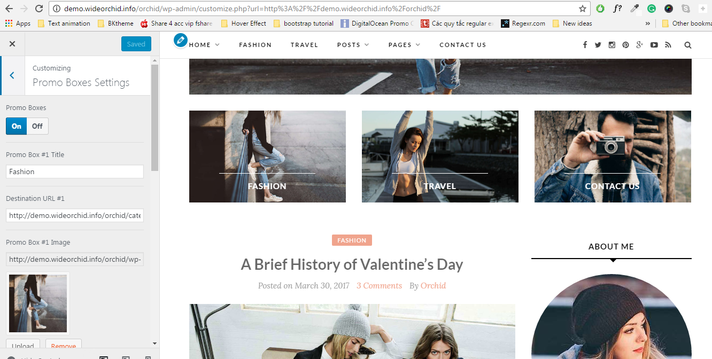
Setting Promo Boxes of Site as below:
Navigate to Appearance > Customize > Post Settings Or Go to Dashboard > Theme Options > Post Settings
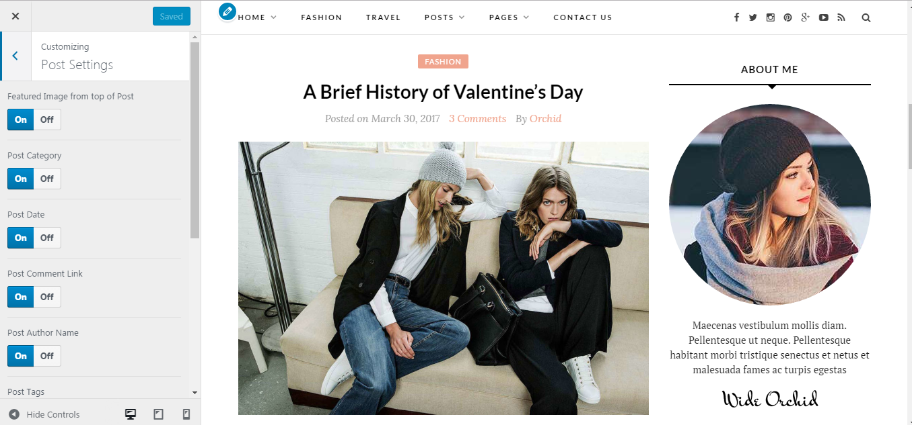
Setting the Post Display on your Site as below:
Navigate to Appearance > Customize > Page Settings Or Go to Dashboard > Theme Options > Page Settings
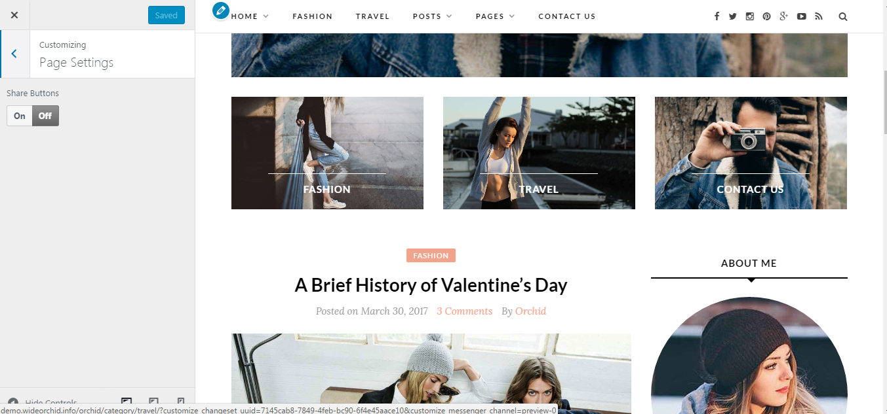
Setting the Page Display on your Site as below:
Navigate to Appearance > Customize > Social Media Settings Or Go to Dashboard > Theme Options > Social Media Settings
Please setup the destination link for each social media that you want to have
Navigate to Appearance > Customize > Footer Settings Or Go to Dashboard > Theme Options > Footer Settings
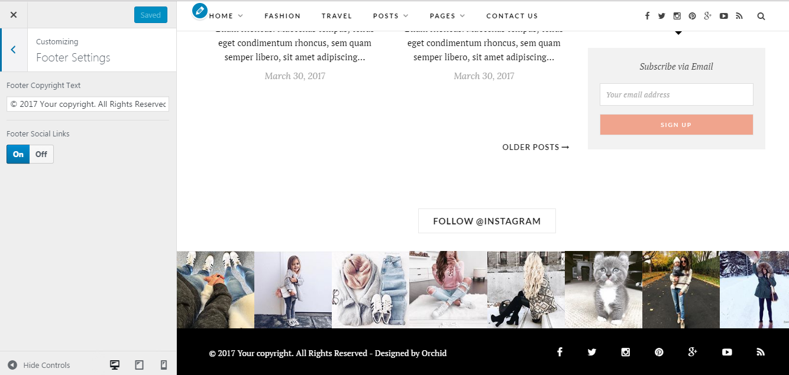
Setting the Footer of your Site as below:
Go to Dashboard > Appearance > Menus
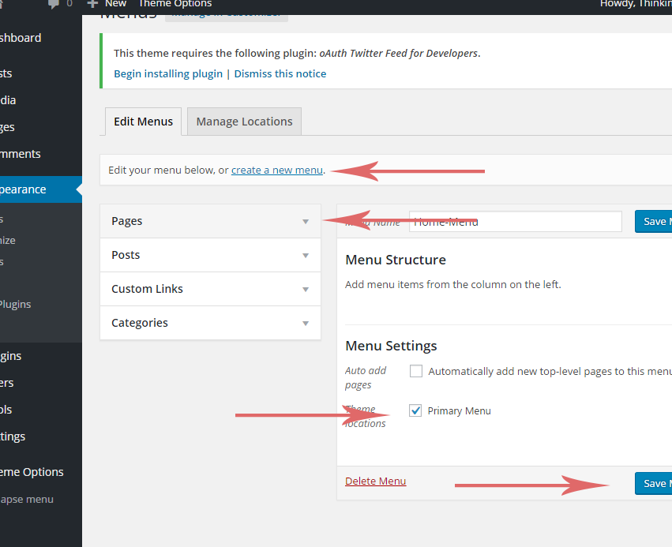
To create Header Menu on the top of Site, you can follow as below steps:
Go to Dashboard > Theme Options > Typography - Please note that the typography setting box is not supported on the Customize Page
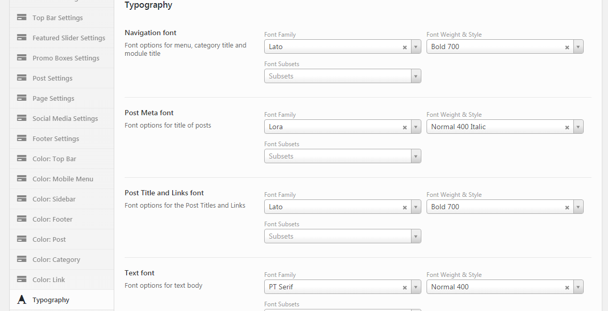
You can change some fonts of Site as your style. Orchid supports all Google Fonts. Header font affects menu titles, category titles and module titles. Title font affects post titles. Text font affects text body, excerpt...
Go to Dashboard > Posts > Add New
You can sellect layout for your Post at Post Option
We have 3 options for the post layout:
You can sellect format for your Post Format is Standard, Video, Gallery and Audio Post
Please ensure that you have installed/activated the included plugin called Vafpress Post Formats UI. When you're creating a new post, choose what post format you'd like from the tab options above the text editor, and insert the necessary content.
You can translate WordPress Themes by using PoEdit
So you are looking to change the language of your WordPress based site to something else than English. Let me give you some simple steps to achieve this.
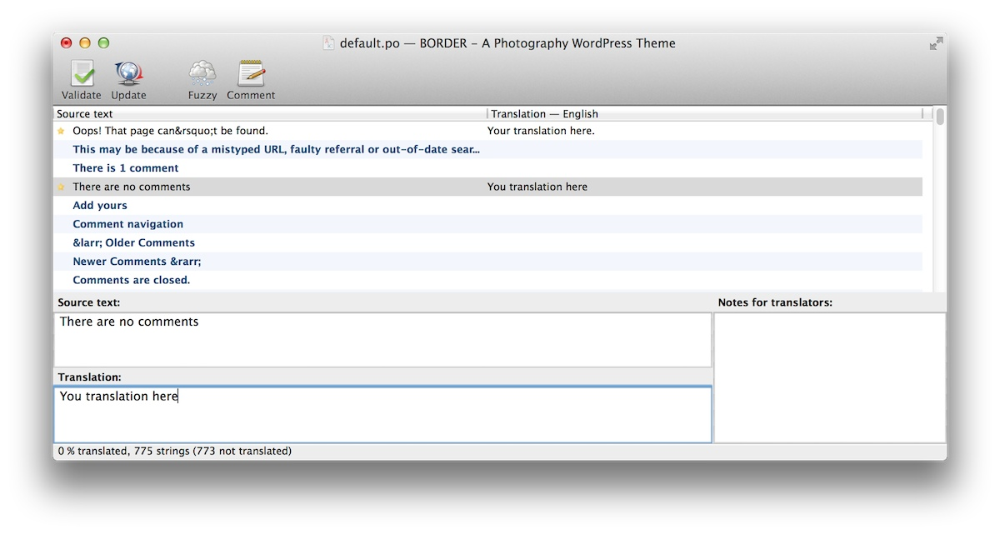
You can reopen the .po file at any time and change, continue to translate, etc.
Thank you for choosing Orchid! We truly hope that you have a good expereince with our themes.
If there is any issue, please don't hesitate to contact us as below